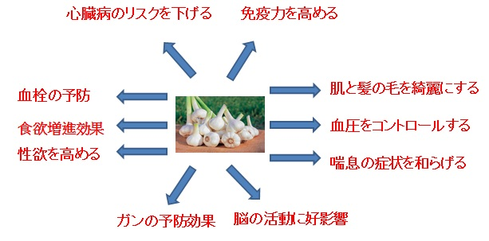

お問い合わせ
お問い合わせ

今年約4,000個のニンニクを植えました。
農薬なし有機野菜をつくりたいです。
春なた順調に伸びています。でも、草とるのはたいへんですね。
にんにくの食べ方
1.油で加熱して香りを出す
みじん切りやスライス、にんにくを潰した状態などでオリーブ油やバター、サラダ油などで加熱する。にんにくの香ばしい香りを油につけることで、食材の風味が増す。
2.おろしにんにく
煮たり焼いたり、炒めるなどの調理過程で「おろしにんにく」を加える。味にコクと香りづけができる。また、煮込み料理の風味づけにも使える。さらに、ラーメンの具や香味料として用いることも可能だ。
3.餃子の餡
餃子であればビタミンB1を多く含む豚肉を使うため、夏バテ対策料理として家族で食べられる。もちろん、ビールのお供にも最適だ。
4.ガーリックライス
にんにくと残ったご飯、ひき肉とを使ってフライパンで炒めるだけの簡単レシピ。食べ盛りのお子さんがいる家庭におすすめだ。
その他、香りが移った醤油を料理の味付けに使う、漬け込んだにんにくを漬物として食べるなどといったこともできる。また、丸ごと揚げたり焼いたりすると、ホクホクとした食感が楽しめる。
にんにくの驚きの効果

株式会社 コッカファーム 株式会社 住吉
〒739-1101
広島県安芸高田市甲田町高田原1373-2
TEL:0826-45-7005
FAX:0826-45-3255
Copyright（C）All Rights Reserved.